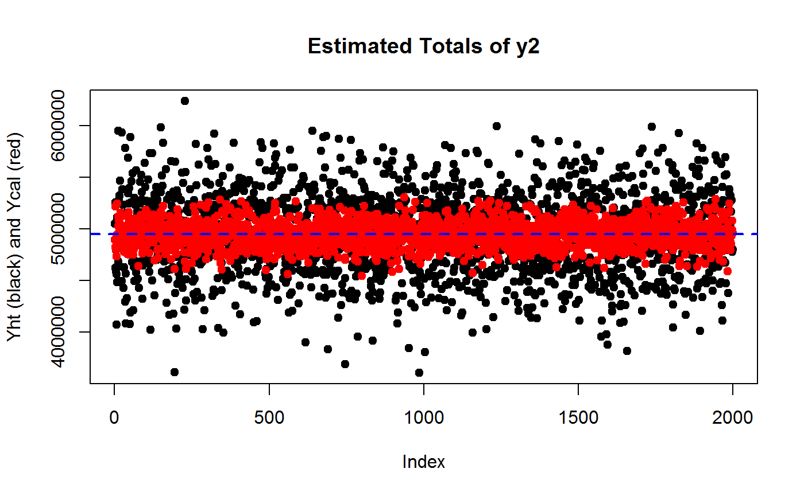
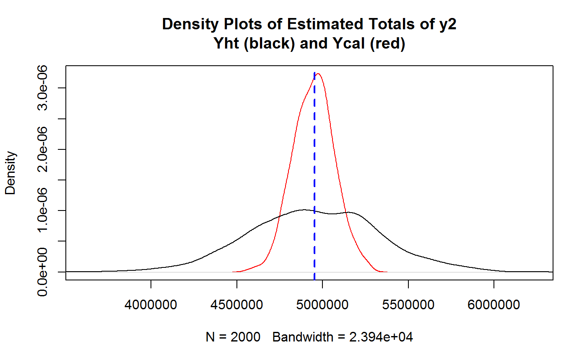
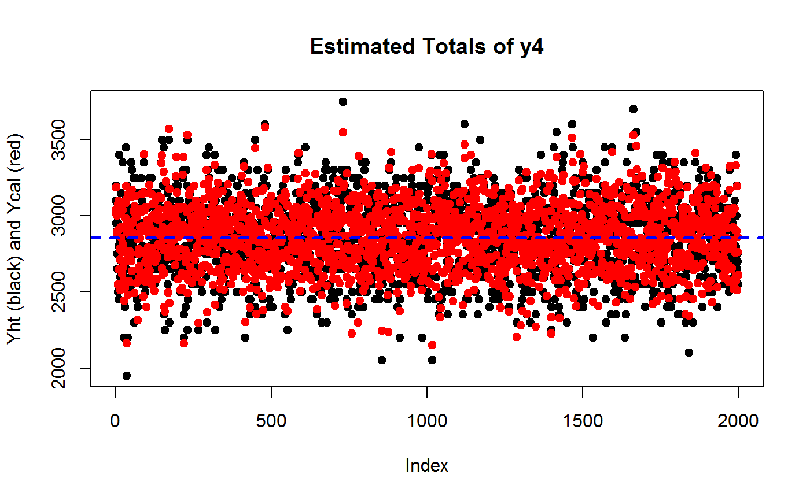

On the Efficiency Gain of Calibration Estimators
Diego Zardetto
2021-06-10
A toy Monte Carlo simulation to show how calibration can increase the precision of survey estimates, while keeping them (nearly) unbiased
Also hints at the ‘Model Assisted’ nature of the calibration approach: the underlying linear model exploited by calibration estimators does not need to be the actual model describing the relations between interest variables and auxiliary variables
# Set Random Number Generator seed for reproducibility
set.seed(12345)
######################################################################
# Generate an artificial population of N = 5000 units with 4 numeric #
# interest variables (y1, y2, y3, y4) and 1 auxiliary variable x. #
# #
# IMPORTANT REMARK: Interest variables are intentionally generated #
# so that they covary with x, though typically #
# *non-linearly* and in very different ways. #
######################################################################
# Population size
N <- 5000
## Generate x from Uniform(a = 15, b = 100)
x <- runif(N, 15, 100)
## y1 linear in x
# Generate y1 from linear model y1 ~ a + bx + e
# with:
# a = 10
# b = 2
# e from N(mu = 0, sigma = 20)
y1 <- 10 + 2 * x + rnorm(length(x), 0, 20)
## y2 quadratic in x
# Generate y2 from linear model y2 ~ a + bx^2 + e
# with:
# a = 10
# b = 1/4
# e from N(mu = 0, sigma = 200)
# NOTE: The data generating model is NOT linear wrt x
y2 <- 10 + (1/4) * x^2 + rnorm(length(x), 0, 200)
## y3 slightly curvilinear in x and heteroskedastic
# Generate y3 from linear model y3 ~ a + bx^(3/2) + e
# with:
# a = 10
# b = 1/4
# e from N(mu = 0, sigma = x)
# NOTE: The data generating model is NOT linear wrt x
# NOTE: The data generating model is HETEROSKEDASTIC
y3 <- 10 + (1/4) * x^(3/2) + rnorm(length(x), 0, x)
## y4 a Bernoulli (dummy) variable with logistic success probability wrt x
# Generate y4 from the logistic model y4 ~ Binomial(1, p(x))
# with:
# p(x) = 1/(1 + exp(-a - bx))
# a = -5/2
# b = 5/100
# NOTE: The Median Effective Level x* (such that p(x*) = 1/2) is x* = -a/b = 50
# NOTE: The data generating model is HIGHLY NONLINEAR wrt x
y4 <- rbinom(length(x), 1, 1/(1 + exp(2.5 - 0.05*x)))
########################################################
# Few plots to have a look at the generated variables. #
########################################################
# Open a new graphics device and record the plot history
windows(record = TRUE)
## y1 vs x
# Scatter plot
plot(x, y1, pch=19, col = adjustcolor("blue", 0.2), main = "Population Scatter Plot")
# Fit a linear regression model y1 ~ x
m1 <- lm(y1 ~ x)
# Add the regression line to the scatter plot
abline(coef(m1), col = "red", lwd = 2)# Plot residuals vs fitted from CORRECTLY SPECIFIED linear regression model
plot(m1, 1, lwd = 2, main = "Population Regression")
# Compute R squared for later use
R2.y1 <- summary(m1)$r.squared
R2.y1## [1] 0.8607507## y2 vs x
# Scatter plot
plot(x, y2, pch=19, col = adjustcolor("blue", 0.2), main = "Population Scatter Plot")
# Fit a MISSPECIFIED linear regression model y2 ~ x
m2 <- lm(y2 ~ x)
# Add the WRONG regression line to the scatter plot
abline(coef(m2), col = "red", lwd = 2)
# Plot residuals vs fitted from MISSPECIFIED linear regression model
plot(m2, 1, lwd = 2, main = "Population Regression")# Compute R squared for later use
R2.y2 <- summary(m2)$r.squared
R2.y2## [1] 0.8965332## y3 vs x
# Scatter plot
plot(x, y3, pch=19, col = adjustcolor("blue", 0.2), main = "Population Scatter Plot")
# Fit a MISSPECIFIED linear regression model y3 ~ x
m3 <- lm(y3 ~ x)
# Add the WRONG regression line to the scatter plot
abline(coef(m3), col = "red", lwd = 2)# Plot residuals vs fitted from MISSPECIFIED linear regression model
plot(m3, 1, lwd = 2, main = "Population Regression")# Compute R squared for later use
R2.y3 <- summary(m3)$r.squared
R2.y3## [1] 0.5428189## y4 vs x
# The relation between y4 and x is better visualized with a horizontal boxplot
boxplot(x ~ y4, horizontal = TRUE, xlab = "x", ylab = "y4", main = "Population Box Plot")
# Scatter plot (add some noise to y4 to help visualization)
plot(x, jitter(y4, 0.3), pch=19, col = adjustcolor("blue", 0.2), ylab = "y4 (noise added)", main = "Population Scatter Plot")
# Fit a MISSPECIFIED linear regression model y4 ~ x
m4 <- lm(y4 ~ x)
# Add the WRONG regression line to the scatter plot
abline(coef(m4), col = "red", lwd = 2)
# Plot residuals vs fitted from MISSPECIFIED linear regression model
plot(m4, 1, lwd = 2, main = "Population Regression")
# Compute R squared for later use
R2.y4 <- summary(m4)$r.squared
R2.y4## [1] 0.2622397###############################################################
# Build the universe. #
# We will later use it as a list frame for sample selection. #
###############################################################
univ <- data.frame(id = 1:length(x), x = x, ones = 1, y1 = y1, y2 = y2, y3 = y3, y4 = y4)
# Have a look
head(univ)## id x ones y1 y2 y3 y4
## 1 1 76.27683 1 144.31429 1043.94703 179.59684 1
## 2 2 89.44072 1 200.95695 2173.37370 154.58172 1
## 3 3 79.68350 1 173.64394 1795.38574 149.70072 1
## 4 4 90.32059 1 163.02769 1947.66892 283.25679 1
## 5 5 53.80088 1 101.61218 786.72440 201.57965 0
## 6 6 29.14160 1 78.62472 38.29909 44.71282 0#############################################################
# Define the sampling design and the sample size to be used #
# in the Monte Carlo simulation. #
#############################################################
# We will select simple random samples without replacement (srs) from univ
# Sample size n = 100
n <- 100
# Sampling fraction (=inclusion probability for srs)
f <- n/N
f## [1] 0.02# Direct weights (=inverse inclusion probabilities) d = 1/p = 1/f
d <- N/n
d## [1] 50# Add convenience columns to univ
univ <- cbind(univ, d = d, f = f)
# Have a look
head(univ)## id x ones y1 y2 y3 y4 d f
## 1 1 76.27683 1 144.31429 1043.94703 179.59684 1 50 0.02
## 2 2 89.44072 1 200.95695 2173.37370 154.58172 1 50 0.02
## 3 3 79.68350 1 173.64394 1795.38574 149.70072 1 50 0.02
## 4 4 90.32059 1 163.02769 1947.66892 283.25679 1 50 0.02
## 5 5 53.80088 1 101.61218 786.72440 201.57965 0 50 0.02
## 6 6 29.14160 1 78.62472 38.29909 44.71282 0 50 0.02#############################################################################
# Compute known population totals to be later used as calibration controls. #
#############################################################################
N <- sum(univ$ones)
N## [1] 5000X <- sum(univ$x)
X## [1] 287655.7#############################################################################
# Compute true population parameters to be estimated: totals of y1, y2, y3. #
#############################################################################
Y1 <- sum(univ$y1)
Y1## [1] 624064.1Y2 <- sum(univ$y2)
Y2## [1] 4952355Y3 <- sum(univ$y3)
Y3## [1] 628791.5Y4 <- sum(univ$y4)
Y4## [1] 2858MCsample <- function(nsamp){
#########################################################
# Monte Carlo - Step 1 #
# Select 'nsamp' samples with n=100 from univ under srs #
# and store them into a list. #
#########################################################
samples <- lapply(1:nsamp, function(i) univ[sample(1:N, n, rep = FALSE), , drop = FALSE])
samples
}
MCdesign <- function(samples){
#########################################################
# Monte Carlo - Step 2 #
# For each sample, bind survey data and sampling design #
# metadata. #
# Store the survey design objects into a list. #
#########################################################
require(ReGenesees)
designs <- lapply(samples, function(sam) e.svydesign(sam, ids = ~id, weights = ~d, fpc = ~f))
designs
}
MCcalibrate <- function(designs, calmodel){
#########################################################
# Monte Carlo - Step 3 #
# Calibrate each survey design object subject to the #
# calibration constraints summarized in 'calmodel'. #
# Store the calibrated objects into a list. #
#########################################################
require(ReGenesees)
# Switch off printing to avoid cluttering the screen with useless messages
# coming from fill.template
trash <- file()
sink(file = trash)
cal.designs <- vector("list", length(designs))
for (i in 1:length(designs)){
# Build known totals template
pop <- pop.template(designs[[i]], calmodel)
# Fill known totals template with actual figures
pop <- fill.template(univ, pop)
# Perform the calibration task
cal.designs[[i]] <- e.calibrate(designs[[i]], pop)
}
# Switch on printing on screen
sink()
close(trash)
cal.designs
}
####################################################################
# Run our toy Monte Carlo experiment with a bunch of 2000 samples. #
####################################################################
nsamp <- 2000
## Select samples
samples <- MCsample(nsamp)
## Generate sampling design objects
designs <- MCdesign(samples)## Loading required package: ReGenesees## ## --------------------------------------------------------## > The ReGenesees package has been successfully loaded. <## --------------------------------------------------------## ## Package: ReGenesees
## Type: Package
## Title: R Evolved Generalized Software for Sampling Estimates and Errors
## in Surveys
## Description: Design-Based and Model-Assisted analysis of complex
## sampling surveys. Multistage, stratified, clustered, unequally
## weighted survey designs. Horvitz-Thompson and Calibration
## Estimators. Variance Estimation for nonlinear smooth estimators
## by Taylor-series linearization. Estimates, standard errors,
## confidence intervals and design effects for: Totals, Means,
## absolute and relative Frequency Distributions (marginal,
## conditional and joint), Ratios, Shares and Ratios of Shares,
## Multiple Regression Coefficients and Quantiles. Automated
## Linearization of Complex Analytic Estimators. Design Covariance
## and Correlation. Estimates, standard errors, confidence
## intervals and design effects for user-defined analytic
## estimators. Estimates and sampling errors for subpopulations.
## Consistent trimming of calibration weights. Calibration on
## complex population parameters, e.g. multiple regression
## coefficients. Generalized Variance Functions (GVF) method for
## predicting variance estimates.
## Version: 2.1
## Author: Diego Zardetto [aut, cre]
## Maintainer: Diego Zardetto <zardetto@istat.it>
## Authors@R: person("Diego", "Zardetto", role = c("aut", "cre"), email =
## "zardetto@istat.it")
## License: EUPL
## URL: https://diegozardetto.github.io/ReGenesees/,
## https://github.com/DiegoZardetto/ReGenesees/
## BugReports: https://github.com/DiegoZardetto/ReGenesees/issues/
## Imports: stats, MASS
## Depends: R (>= 2.14.0)
## ByteCompile: TRUE
## Built: R 4.0.5; ; 2021-06-09 16:40:53 UTC; windows## ## Calibrate design objects
# Auxiliary information is N and X, hence
# calmodel = ~x + ones - 1
cal.designs <- MCcalibrate(designs, ~x + ones - 1)
#################################################
# Experiment 1 - Interest variable is y1 #
# Compute and compare Horvitz-Thompson (HT) and #
# calibration (CAL) estimators of totals. #
#################################################
# HT
Y1ht <- sapply(designs, function(des) coef(svystatTM(des, y = ~y1)))
# Cal
Y1cal <- sapply(cal.designs, function(des) coef(svystatTM(des, y = ~y1)))
## Compare MC generated Y1ht and Y1cal estimates via scatter plots
plot(Y1ht, pch = 19, ylab = "Yht (black) and Ycal (red)", main = "Estimated Totals of y1")
points(Y1cal, col = "red", pch = 19)
# Add TRUE value of Y1 as reference line
abline(h = Y1, col = "blue", lty = 2, lwd = 2)## Compare MC generated Y1ht and Y1cal via density plots
plot(density(Y1cal), xlim = range(Y1ht, Y1cal), col = "red", type = "l", main = "Density Plots of Estimated Totals of y1\nYht (black) and Ycal (red)")
points(density(Y1ht), type="l")
# Add TRUE value of Y1 as reference line
abline(v = Y1, col = "blue", lty = 2, lwd = 2)
## Assess the variance reduction achieved by calibration through MC...
var(Y1cal)/var(Y1ht)## [1] 0.1312868# ...the gain should be roughly of order 1 - R2
1 - R2.y1## [1] 0.1392493## Check that going from HT to CAL does NOT introduce substantial BIAS
## HT Relative Bias from MC...
RB.Y1ht <- (mean(Y1ht) - Y1)/Y1
RB.Y1ht## [1] -0.0006889486## CAL Relative Bias from MC...
RB.Y1cal <- (mean(Y1cal) - Y1)/Y1
RB.Y1cal## [1] 1.514882e-05# End
########################################################
# Experiment 2 - Interest variable is y2 #
# Compute and compare HT and CAL estimators of totals. #
########################################################
# HT
Y2ht <- sapply(designs, function(des) coef(svystatTM(des, y = ~y2)))
# Cal
Y2cal <- sapply(cal.designs, function(des) coef(svystatTM(des, y = ~y2)))
## Compare MC generated Y2ht and Y2cal estimates via scatter plots
plot(Y2ht, pch = 19, ylab = "Yht (black) and Ycal (red)", main = "Estimated Totals of y2")
points(Y2cal, col = "red", pch = 19)
# Add TRUE value of Y2 as reference line
abline(h = Y2, col = "blue", lty = 2, lwd = 2)
## Compare MC generated Y2ht and Y2cal via density plots
plot(density(Y2cal), xlim = range(Y2ht, Y2cal), col = "red", type = "l", main = "Density Plots of Estimated Totals of y2\nYht (black) and Ycal (red)")
points(density(Y2ht), type="l")
# Add TRUE value of Y2 as reference line
abline(v = Y2, col = "blue", lty = 2, lwd = 2)
## Assess the variance reduction achieved by calibration through MC...
var(Y2cal)/var(Y2ht)## [1] 0.104427# ...the gain should be roughly of order 1 - R2
1 - R2.y2## [1] 0.1034668## Check that going from HT to CAL does NOT introduce substantial BIAS
## HT Relative Bias from MC...
RB.Y2ht <- (mean(Y2ht) - Y2)/Y2
RB.Y2ht## [1] -0.0007183598## CAL Relative Bias from MC...
RB.Y2cal <- (mean(Y2cal) - Y2)/Y2
RB.Y2cal## [1] -0.0007507708# End
########################################################
# Experiment 3 - Interest variable is y3 #
# Compute and compare HT and CAL estimators of totals. #
########################################################
# HT
Y3ht <- sapply(designs, function(des) coef(svystatTM(des, y = ~y3)))
# Cal
Y3cal <- sapply(cal.designs, function(des) coef(svystatTM(des, y = ~y3)))
## Compare MC generated Y3ht and Y3cal estimates via scatter plots
plot(Y3ht, pch = 19, ylab = "Yht (black) and Ycal (red)", main = "Estimated Totals of y3")
points(Y3cal, col = "red", pch = 19)
# Add TRUE value of Y3 as reference line
abline(h = Y3, col = "blue", lty = 2, lwd = 2)
## Compare MC generated Y3ht and Y3cal via density plots
plot(density(Y3cal), xlim = range(Y3ht, Y3cal), col = "red", type = "l", main = "Density Plots of Estimated Totals of y3\nYht (black) and Ycal (red)")
points(density(Y3ht), type="l")
# Add TRUE value of Y3 as reference line
abline(v = Y3, col = "blue", lty = 2, lwd = 2)## Assess the variance reduction achieved by calibration through MC...
var(Y3cal)/var(Y3ht)## [1] 0.4366279# ...the gain should be roughly of order 1 - R2
1 - R2.y3## [1] 0.4571811## Check that going from HT to CAL does NOT introduce substantial BIAS
## HT Relative Bias from MC...
RB.Y3ht <- (mean(Y3ht) - Y3)/Y3
RB.Y3ht## [1] -0.002358876## CAL Relative Bias from MC...
RB.Y3cal <- (mean(Y3cal) - Y3)/Y3
RB.Y3cal## [1] -0.001762946# End
########################################################
# Experiment 4 - Interest variable is y4 #
# Compute and compare HT and CAL estimators of totals. #
########################################################
# HT
Y4ht <- sapply(designs, function(des) coef(svystatTM(des, y = ~y4)))
# Cal
Y4cal <- sapply(cal.designs, function(des) coef(svystatTM(des, y = ~y4)))
## Compare MC generated Y4ht and Y4cal estimates via scatter plots
plot(Y4ht, pch = 19, ylab = "Yht (black) and Ycal (red)", main = "Estimated Totals of y4")
points(Y4cal, col = "red", pch = 19)
# Add TRUE value of Y4 as reference line
abline(h = Y4, col = "blue", lty = 2, lwd = 2)
## Compare MC generated Y4ht and Y4cal via density plots
plot(density(Y4cal), xlim = range(Y4ht, Y4cal), col = "red", type = "l", main = "Density Plots of Estimated Totals of y4\nYht (black) and Ycal (red)")
points(density(Y4ht), type="l")
# Add TRUE value of Y4 as reference line
abline(v = Y4, col = "blue", lty = 2, lwd = 2)
## Assess the variance reduction achieved by calibration through MC...
var(Y4cal)/var(Y4ht)## [1] 0.757955# ...the gain should be roughly of order 1 - R2
1 - R2.y4## [1] 0.7377603## Check that going from HT to CAL does NOT introduce substantial BIAS
## HT Relative Bias from MC...
RB.Y4ht <- (mean(Y4ht) - Y4)/Y4
RB.Y4ht## [1] 0.001075927## CAL Relative Bias from MC...
RB.Y4cal <- (mean(Y4cal) - Y4)/Y4
RB.Y4cal## [1] 0.002151844# End